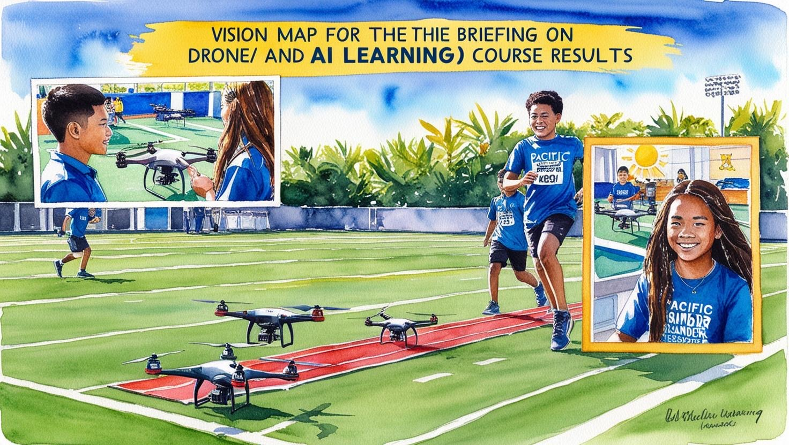
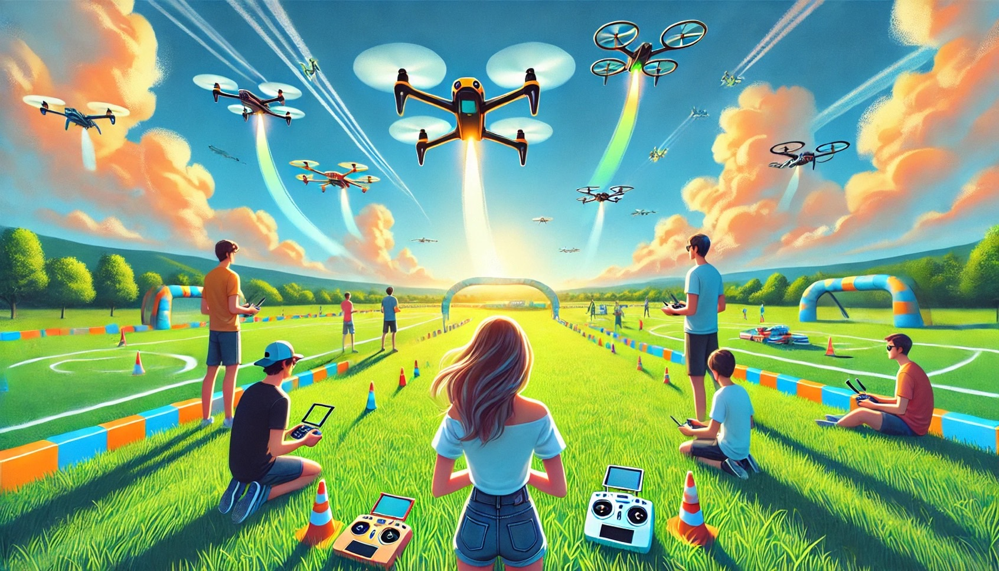

關於機刻救援
我們的目的
- 教育推廣：普及無人機應用及AI影像辨識技術在巡檢與救援中的實際應用。
- 技能提升：增強使用者的無人機操作技能及應急處理能力。
- 社會意識：將無人機救援納入應急管理與社會安全體系，提高社會對科技巡檢和救援的認識。
- 寓教於樂：為學生、家庭及業餘玩家提供一個結合學習與娛樂的平台，提升參與感與趣味性。


需求重點
- 開發多難度無人機模擬場景，提供真實感的操作體驗。
- 整合AI影像辨識技術，用於目標搜尋、判定及精確作業。
- 設計友好使用者介面，適合不同年齡層及經驗水平。
- 提供線上/線下競賽平台，方便參與與分享成果。
- 支援教育資源，如教學模組及培訓教材。
發展里程碑
需求調研與規劃 (0-3個月)
- 確定目標受眾與關鍵需求
- 完成技術與教育內容設計草案
平台與場景開發 (4-9個月)
- 開發模擬巡檢場景及AI辨識功能
- 測試與優化多難度賽事系統
試點運行 (10-12個月)
- 舉辦首次測試賽事，收集反饋
- 完善系統功能與教育內容
正式推出 (12-18個月)
- 啟動全規模賽事，推廣至學校與社區
- 開展教育與宣傳活動
擴展與持續改進 (18-24個月)
- 加入更多場景與挑戰，吸引回流參與者
- 與更多機構合作，提升影響力
產品及服務
產品：
- 多場景無人機操作模擬平台，結合AI影像辨識，提供巡檢、目標搜尋、噴灑、拋投等功能。
- 模組化教育內容，適用於學校課程及培訓計畫。
服務：
- 賽事活動（多難度級別），包括線下與線上競賽。
- 技術支持與硬體租賃，降低參與門檻。
- 課程與實作指導，促進無人機技術學習。